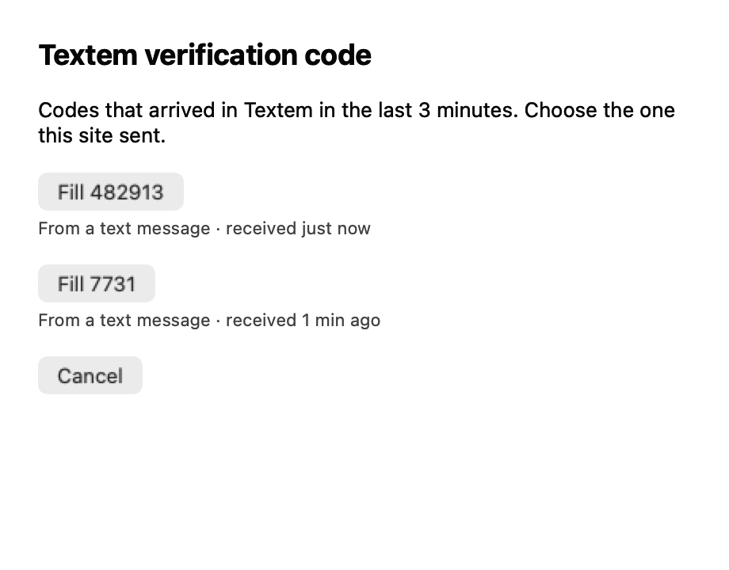
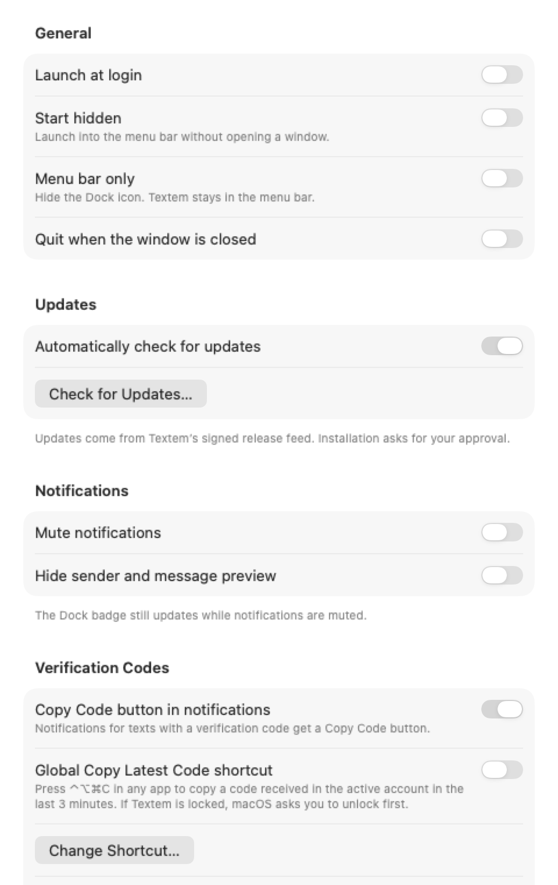

Features
Native notifications + badge
Dock unread badge and native banners — click to jump to the thread.
Menu bar & background
Menu-bar presence, launch at login, run in background, menu-bar-only mode.
Verification codes
When a text with a code arrives, click Copy Code on the notification. Codes expire after 3 minutes.
Multiple accounts
Separate, persistent sessions for each Google account, with a quick switcher (macOS 14+).
Shortcuts
Global show/hide (⌥⌘M), new conversation, find, zoom, copy latest code, always on top.
Private by design
Textem adds no telemetry or relay server. Your local session connects directly to Google’s web client.
Free & MIT-licensed
Every feature paid wrappers lock behind “Pro,” at no cost. Public source is planned for 1.0.
Verification codes, one click away
Apple only suggests codes from its own Messages and Mail apps. Textem gives your Google Messages codes the same shortcut.
- Copy Code appears on the notification as soon as a text with a code arrives. Click, then paste.
- Textem Codes in AutoFill Experimental · macOS 15+ lists your fresh codes right in Safari’s code field.
- Cautious by design: it ignores your own messages, promo codes, phone numbers and amounts, and never offers a code older than 3 minutes.

Settings that stay out of the way

- Launch at login, start hidden, or run from the menu bar with no Dock icon.
- Hide the sender and text from notifications, blur message previews, or hide avatars.
- Offline Mode Experimental pauses Google Messages and shows phone history you’ve saved to this Mac. Ordinary conversations aren’t stored offline.
Sign-in notice
Signing in: choose “Enter your password” and a non-passkey second step (Google prompt, SMS/email code, or authenticator). Passkeys don’t work inside an embedded web view — it’s a platform limitation, not a bug. You only sign in once.
Getting set up
Pair once and Textem stays paired. Here’s the smooth path:
- Start on your phone. Open Google Messages, tap your account menu (top right), then Device pairing.
- Sign in to Textem with the same Google account and choose “Enter your password” — not the passkey option.
- Pick a non-passkey second step: a Google prompt (“Tap Yes” on your phone), an SMS or email code, or an authenticator app.
- Tap the matching emoji. Your phone shows three emoji — tap the one that matches what Textem shows. Your phone vibrates when pairing completes.
Troubleshooting
It only offers a passkey, or won’t let me sign in
Passkeys can’t work inside an embedded web view — that’s an Apple platform limitation for sites we don’t own, not a bug in Textem. On the sign-in screen choose “Enter your password” and a non-passkey second step (Google prompt, SMS/email code, or authenticator).
I don’t see Device pairing, or the emoji never appears
Update Google Messages on your phone, then open your account menu (top right) → Device pairing. Make sure your phone and Textem are signed in to the same Google account. QR-code pairing is no longer available in the US, so the emoji prompt is the way to pair there.
A message says “View on your phone”
Google sends some messages — usually business messages with rich cards, images or buttons — only to your phone. Google Messages for web never receives their content, so Textem can’t show it either. Open those messages on your phone.
Textem disconnected after I used Messages in a browser
Google allows only one active computer at a time per account. Opening Google Messages for web in a browser or on another computer makes that the active one, and Textem loses its connection. Close the other session, then reload Textem (⇧⌘R).
It keeps asking me to re-confirm, or the pairing won’t stick
That’s usually cross-site cookie partitioning. Textem already relaxes tracking prevention on its own data store so Google’s cookies aren’t split between accounts.google.com and messages.google.com. If it still loops, quit Textem fully and reopen it — don’t force-quit while you’re mid-sign-in — then try once more.
Is my data private?
Yes. Textem is just a wrapper around Google’s own web client: your session lives locally on your Mac, there’s zero telemetry, and nothing sits between you and Google — no third-party account, no relay server.